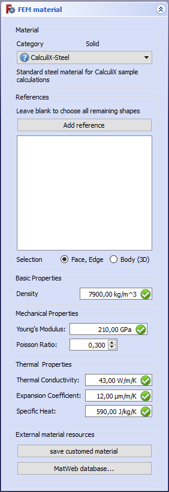

FEM MaterialSolid
|
| Расположение в меню
|
| FEM → Material for solid
|
| Верстаки
|
| FEM
|
| Быстрые клавиши
|
| M,M
|
| См. также
|
| FEM tutorial
|
|
Description
Adds material properties to a part.
How to use
- Click on or choose Model → FEM material for solid from the top menu.
- Double click the created SolidMaterial object

- Select a material. For engineering mecanical analysis, CalculiX-Steel is a typical option.
- Provided that you are applying material to the whole object, don't select any geometrical entities (leave reference list empty). Material will be applied to whole model. Otherwise assign material to particular model parts manually by selecting some of them for each inserted material, but don't leave any part of the model without material assigned.
- You can adjust material properties such as density, young's modulus, poisson ratio, etc., however most of the common materials are already available in the presets and they don't need any tweaking.
- If you make modifications, you can save your customized material.
- Click Close to close the dialog and create SolidMaterial object
Limitations
Notes
- The mechanical material uses the *MATERIAL card in CalculiX. Details about the mechanical material is explained at http://web.mit.edu/calculix_v2.7/CalculiX/ccx_2.7/doc/ccx/node216.html
{kind=link}
{kind=link}